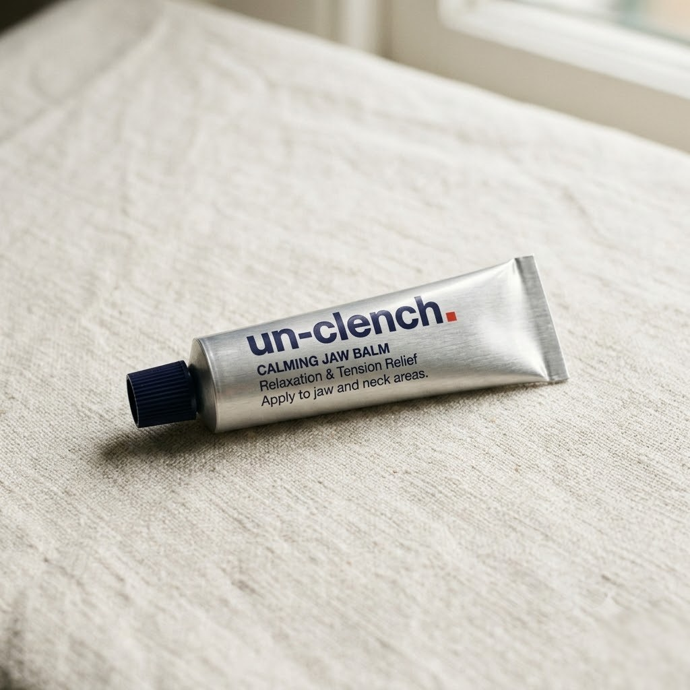

The muscles that carry your clench — the masseter at the jaw angle, the temporalis at your temples — respond beautifully to warmth and massage. This is the first balm formulated specifically for them: warming, calming, and made for the end-of-day release ritual.
Un-clench is the only company that has dedicated its entire existence to jaw clenching and tooth grinding. Every hour of research, every product and every clinician we work with exists to do one thing: relieve the clench — using the latest clinical science, built to the standard of the leading experts we work with.
The classic massage mineral, delivered where the tension lives. Its inclusion makes the balm feel substantial and softening as you work it into the muscle.
The traditional massage botanical, long used to support recovery-focused massage. It earns its place in any formula built around working a hard-used muscle.
A mild warming agent creates the gentle heat that makes jaw massage effective — warmth relaxes, and relaxed muscle releases.
A rich, slow-absorbing base that gives your fingers the glide a proper masseter massage needs, and leaves the skin conditioned rather than greasy.
Full INCI ingredient list is printed on every tube and finalised with our UK manufacturer under a certified cosmetic safety assessment. This is a cosmetic massage product — it supports your release routine and is not a medicine.
Squeeze a pea-sized amount onto two fingers at the end of the day — or whenever the jaw feels held.
Locate the masseter: clench briefly and feel the muscle bulge at the angle of your jaw. Unclench, then massage the balm in slow, firm circles for 60–90 seconds each side.
Sweep upward to the temples and repeat with lighter pressure. Breathe out as you work — the exhale is part of the release.
Pair with the Release Tool for deeper trigger-point work, or finish with a warm compress before bed.